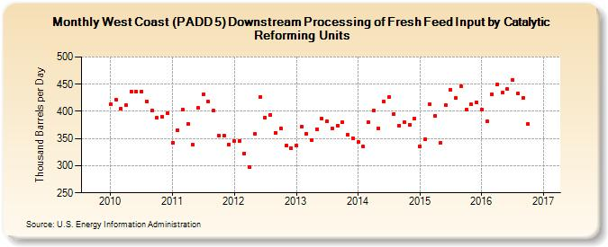

|
Download Data (XLS File) |
|
||||||||
|  | ||||||||
| West Coast (PADD 5) Downstream Processing of Fresh Feed Input by Catalytic Reforming Units (Thousand Barrels per Day) | ||||||||
| Year | Jan | Feb | Mar | Apr | May | Jun | Jul | Aug | Sep | Oct | Nov | Dec |
|---|---|---|---|---|---|---|---|---|---|---|---|---|
| 2010 | 413 | 422 | 405 | 411 | 437 | 436 | 437 | 418 | 402 | 388 | 390 | 396 |
| 2011 | 342 | 366 | 403 | 377 | 338 | 406 | 431 | 418 | 401 | 356 | 355 | 339 |
| 2012 | 346 | 346 | 323 | 297 | 358 | 426 | 389 | 394 | 361 | 369 | 337 | 333 |
| 2013 | 337 | 372 | 359 | 347 | 367 | 387 | 381 | 369 | 374 | 380 | 357 | 351 |
| 2014 | 343 | 335 | 380 | 401 | 369 | 418 | 426 | 395 | 374 | 380 | 375 | 386 |
| 2015 | 336 | 349 | 414 | 391 | 342 | 411 | 440 | 424 | 446 | 403 | 413 | 417 |
| 2016 | 404 | 381 | 431 | 449 | 434 | 441 | 458 | 433 | 425 | 377 | 351 | |
| - = No Data Reported; -- = Not Applicable; NA = Not Available; W = Withheld to avoid disclosure of individual company data. |
| Release Date: 1/31/2017 |
| Next Release Date: 2/28/2017 |